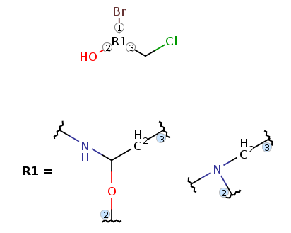

Codename: vmn
Markush structure files complying the Markush DARC format are processed by Marvin, though with some
limitations. Interpretation of the main VMN features are
listed below.
The AMN file is looked for in the directory of
the VMN file, with the same name and .amn extension
(e.g. the AMN file of 46mrk001.vmn is 46mrk001.amn).
The atom attributes and the AMN text notes are stored in Marvin atom properties, as described below.
Groups: G0 is read in as root structure while G1, G2, ...
are stored in corresponding R-groups R1, R2, ... The representation of
attachments is described below.
Undefined attachment information is stored in form of position variation (variable attachment) bonds.
Moieties are represented as repeating units with repetition ranges with no crossing bonds, but ignored (ungrouped) during search and enumeration.
Multipliers are represented as repeating units with repetition ranges with a single crossing bond, but ignored (ungrouped) during search and enumeration.
Repeating units other than moieties and multipliers are described using a numerotation (numbering)
attribute of three digits (e.g. 100) on the atoms of the repeating unit, with the appropriate
repetition range text recorded in the corresponding AMN file (e.g. M100=1-4).
Note, that there is a limitation on the number of elements in a
repetition range (at most 10) and on the number of crossing bonds that can be processed
(2 or 4).
Structure shortcuts are read in as specific built-in abbreviated groups (superatom groups).
Amino acids are read in by peptide import, which uses built-in abbreviated groups (superatom groups) to represent peptides.
Superatoms are read in as pseudo-atoms and treated as homology groups.
Atom attributes: we interpret the following VMN atom attributes:
| VMN attribute name | Marvin atom property name | property values |
|---|---|---|
| DT - Deuterium-Tritium counts | DTCOUNT | D[deuterium count]T[tritium count] (e.g. D3T2) |
| CR - Carbon ring attributes | BRANCHING | BRA, STR |
| SIZE | LO, MID, HI, LO MID, MID HI, LO HI | |
| SATURATION | SAT, UNS | |
| RINGTYPE | MON, FU | |
| data in AMN | TEXTNOTES | AMN text referring to the atom (e.g. N0-4,S0-4) |
For the interpretation of these attributes, refer to the Homology groups in Markush structures manual.
The following structure shortcuts (abbreviated groups) are supported:
| ACE | BU | C2, C3, ..., C20 | CN | CO1 | CO2 |
| COI | ET | IBU | IPR | MBE | NBU |
| NO2 | NPR | OBE | PBE | PH | PO3 |
| PO4 | SBU | SO2 | SO3 | TBU |
The following standard amino acids (peptide abbreviated groups) are supported:
| ALA | ARG | ASN | ASP | CYS | GLN |
| GLU | GLY | HIS | ILE | LEU | LYS |
| MET | PHE | PRO | SER | THR | TRY |
| TYR | VAL |
The following non-standard peptides are also supported:
| ABU | aminobutyric acid |
| ASU | aminosuberic acid |
| GLP | pyroglumatic acid |
| HCY | homocysteine |
| HSE | homoserine |
| NLE | norleucine |
| NVA | norvaline |
| ORN | ornithine |
| SAR | sarcosine |
| STA | statine |
Note, that peptide connection bonds are not handled currently, therefore peptide sequences may not be correct.
For more information on peptide representation refer to the Peptide import documentation.
Superatoms representing homology groups are read in as pseudo atoms. The following homologies are interpreted by enumeration and search:
| CHK | CHE | CHY | CYC | ARY | HET |
| HEA | HEF | UNK | MX | AMX | A35 |
| TRM | LAN | ACT | HAL | ACY | PRT |
| XX |
For a detailed description of the interpretation, refer to the Homology groups in Markush structures manual.
From Marvin 5.4 multiple R-group attachments are fully supported by the new R-group attachment representation:

The number of elements in a repetition range is limited to 10 (e.g. range M100=2,5- is interpreted as M100=2,5-13). Repeating units with more than 4 crossing bonds are not processed by search and enumeration.
The following superatoms (homologies) are not supported by search and enumeration (but read in and displayed as pseudo-atoms):
| POL | PEG | DYE | PRT |
The detailed description of homology interpretation is described in the Homology groups in Markush structures manual.
The following atom attributes are not processed by search and enumeration (but displayed in atom labels):
| PA | Polymer indicator |
| SP | Position indicator |
VMN export is not available yet.